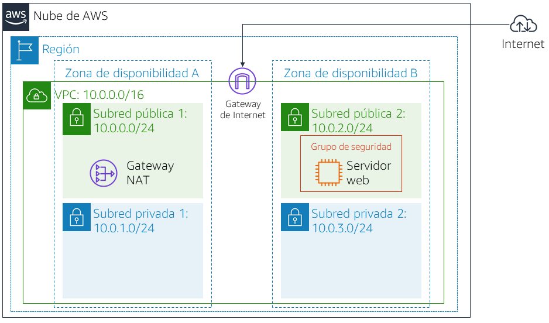
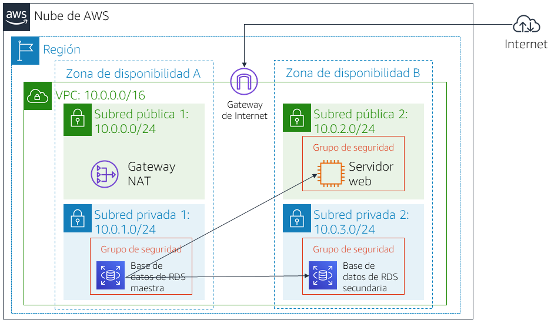

Versión 4.6.6 (TESS2)
Este laboratorio se diseñó para reforzar la noción de aprovechar las instancias de base de datos administradas por AWS para satisfacer las necesidades de bases de datos relacionales.
Amazon Relational Database Service (Amazon RDS) facilita las tareas de configuración, operación y escalado de una base de datos relacional en la nube. Proporciona una capacidad rentable y de tamaño modificable, al mismo tiempo que permite gestionar las tareas de administración de base de datos que requieren mucho tiempo, lo que permite centrarse en las aplicaciones y el negocio. Amazon RDS le ofrece seis motores de base de datos familiares entre los que elegir: Amazon Aurora, Oracle, Microsoft SQL Server, PostgreSQL, MySQL y MariaDB.
Objetivos
Después de completar este laboratorio, podrá hacer lo siguiente:
Duración
La duración estimada de este laboratorio es de 30 minutos aproximadamente.
Situación
Comenzará con la siguiente infraestructura: 
Al final del laboratorio, la infraestructura será la siguiente:

En la parte superior de estas instrucciones, haga clic en Start Lab (Iniciar laboratorio) para lanzar su laboratorio.
Se abrirá el panel “Start Lab” (Iniciar laboratorio), donde se muestra el estado del laboratorio.
Espere hasta que aparezca el mensaje “Lab status: ready” (Estado del laboratorio: listo) y, luego, haga clic en la X para cerrar el panel “Start Lab (Iniciar laboratorio)”.
En la parte superior de estas instrucciones, haga clic en AWS.
La consola de administración de AWS se abrirá en una nueva pestaña del navegador. El sistema iniciará su sesión automáticamente.
Sugerencia: Si no se abre una pestaña nueva del navegador, debería aparecer un banner o un icono en la parte superior de este, el cual indique que el navegador no permite que se abran ventanas emergentes en el sitio. Haga clic en el banner o en el icono, y elija “Allow pop ups” (Permitir ventanas emergentes).
Ubique la pestaña de la consola de administración de AWS en un lugar donde aparezca al lado de estas instrucciones. Se abrirá el panel “Start Lab” (Iniciar laboratorio), donde se muestra el estado del laboratorio.
En esta tarea, creará un grupo de seguridad para permitir que su servidor web acceda a la instancia de base de datos de RDS. El grupo de seguridad se utilizará al lanzar la instancia de base de datos.
En la consola de administración de AWS, encontrará el menú Services (Servicios), donde debe hacer clic en VPC.
En el panel de navegación izquierdo, haga clic en Security Groups (Grupos de seguridad).
Haga clic en Create security group (Crear grupo de seguridad) y, a continuación, configure lo siguiente:
DB Security Group (Grupo de seguridad de base de datos)Permit access from Web Security Group (Permitir el acceso desde el grupo de seguridad web)Ahora, agregará una regla al grupo de seguridad para permitir las solicitudes de base de datos entrantes.
En el panel Inbound rules (Reglas de entrada), seleccione Add rule (Agregar regla)
Actualmente, el grupo de seguridad no tiene reglas. Agregará una regla para permitir el acceso desde el grupo de seguridad web.
Configure los siguientes ajustes:
sg y luego seleccione Web Security Group (Grupo de seguridad web).Así se configura el grupo de seguridad de base de datos para permitir el tráfico entrante en el puerto 3306 desde cualquier instancia EC2 asociada al Grupo de seguridad web.
Elija Create security group (Crear grupo de seguridad)
Utilizará este grupo de seguridad al lanzar la base de datos de Amazon RDS.
En esta tarea, creará un grupo de subredes de base de datos que se emplea a fin de informar a RDS acerca de qué subredes se pueden utilizar para la base de datos. Cada grupo de subredes de base de datos requiere subredes en al menos dos zonas de disponibilidad.
Si el panel de navegación no está visible, haga clic en el icono del menú en la esquina superior izquierda.
grupo de subredes de base de datosgrupo de subredes de base de datosEstas subredes deberían mostrarse ahora en la tabla de subredes seleccionadas.
Utilizará este grupo de subredes de base de datos en la creación de la base de datos de la siguiente tarea.
En esta tarea, deberá configurar y lanzar una instancia de base de datos Multi-AZ de Amazon RDS for MySQL.
Las implementaciones Multi-AZ de Amazon RDS proporcionan mejoras en la disponibilidad y la durabilidad de las instancias de base de datos, lo que las hace adecuadas para las cargas de trabajo de bases de datos de producción. Cuando aprovisiona una instancia Multi-AZ de base de datos, Amazon RDS crea automáticamente una instancia de base de datos principal y, de forma sincronizada, replica los datos a una instancia en espera en una zona de disponibilidad diferente.
Si ve el mensaje Switch to the new database creation flow (Cambiar al nuevo flujo de creación de bases de datos) en la parte superior de la pantalla, haga clic en él.
lab-dbmain (principal)lab-passwordlab-passwordlabEsto desactivará las copias de seguridad, lo que no suele recomendarse, pero permitirá una implementación más rápida de la base de datos para este laboratorio.
Ahora se lanzará la base de datos.
Si recibe un error con el mensaje “not authorized to perform: iam:CreateRole” (No cuenta con la autorización para realizar la acción iam:CreateRole), asegúrese de haber desactivado Enable Enhanced monitoring (Habilitar monitoreo mejorado) en el paso anterior.
Espere aproximadamente 4 minutos para que se habilite la disponibilidad de la base de datos. El proceso de implementación implica la implementación de una base de datos en dos zonas de disponibilidad diferentes.
Mientras espera, debería revisar las Preguntas frecuentes sobre Amazon RDS o bien, tomar un café.
Se verá similar a lo siguiente: lab-db.cggq8lhnxvnv.us-west-2.rds.amazonaws.com
En esta tarea, abrirá una aplicación web que se ejecuta en el servidor web y la configurará para utilizar la base de datos.
Se visualizará la aplicación web, que mostrará información acerca de la instancia EC2.
Ahora, configurará la aplicación para que se conecte a la base de datos.
labmainlab-passwordSe visualizará un mensaje en el cual se explica que la aplicación está ejecutando un comando para copiar información en la base de datos. Después de algunos segundos, verá una libreta de direcciones en la aplicación.
La aplicación de la libreta de direcciones utiliza la base de datos de RDS para almacenar información.
Los datos se conservan en la base de datos y se replican automáticamente en la segunda zona de disponibilidad.
¡Felicitaciones! Ha completado el laboratorio.
Aparecerá un panel en el que se indica: “DELETE has been initiated… You may close this message box now”. (Se ha iniciado la ELIMINACIÓN… Ya puede cerrar este cuadro de mensajes).
Envíenos sus comentarios, sugerencias o correcciones por email a aws-course-feedback@amazon.com
Arranque v3.3.5 - [http://getbootstrap.com](http://getbootstrap.com "http://getbootstrap.com/")
La licencia de MIT
Copyright (c) 2011-2016 Twitter, Inc.
Mediante este documento se concede permiso, libre de cargos, a cualquier persona que obtenga una copia de este software y sus archivos de documentación asociados (el “Software”) para utilizar el Software sin ningún tipo de restricción, incluidos sin limitación los derecho de uso, copia, modificación, combinación, publicación, distribución, obtención de sublicencias o venta de copias del Software, así como autorizar a ello a quienes va dirigido el Software, sujetos a las siguientes condiciones:
El anterior aviso de copyright y este permiso se deberán incluir en todas las copias o en partes considerables del Software.
EL SOFTWARE SE SUMINISTRA “TAL CUAL”, SIN GARANTÍAS DE NINGÚN TIPO, NI EXPLÍCITAS NI IMPLÍCITAS, INCLUIDAS, ENTRE OTRAS, LAS GARANTÍAS DE COMERCIABILIDAD, ADECUACIÓN A UN FIN ESPECÍFICO Y NO INCUMPLIMIENTO. NI LOS AUTORES NI LOS TITULARES DEL COPYRIGHT SE HARÁN RESPONSABLES EN NINGÚN MOMENTO DE RECLAMACIONES, DAÑOS O CUALQUIER OTRA OBLIGACIÓN, YA SEA EN UNA ACCIÓN CONTRACTUAL, FRAUDULENTA O CUALQUIER OTRA, QUE PROVENGA DE, FUERA DE O EN CONEXIÓN CON EL SOFTWARE O EL USO DE ESTE U OTROS TRATOS EN EL SOFTWARE.